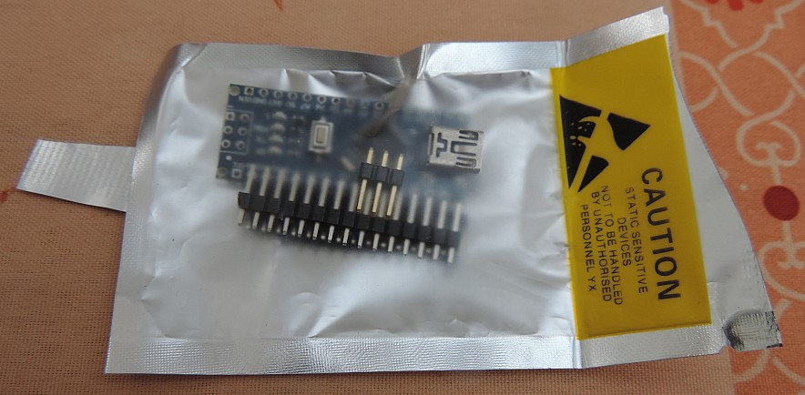

Nano-Nano Installation
A little background on the Arduino project to start with. For a long time I was convinced that we could do with a Raspberry system in all situations: The Raspberry was a perfect workhorse to do database pocessing and other compute intensive stuff and it would run a standard version of Linux. And because of its low price of around 35 Euro for the Raspberry version 2, who would be looking for any other system to build a Home Automation (HA) system.


However, it turns out that the Raspberry does have some trouble with interrupt intensive loads and it's timing is not accurate enough to provide real-time like experience especially for smort messages. Also, the price of a lean-and-mean Arduino is just 2.50 Euro for an Arduino model Nano. So why not use that system as a gateway handling all transmitter/receiver interrupts? And it's timing is far better....
So I decided to buy myself 2 of these Arduino Nano machines and connect hem to my LamPI system as an alternative to direct connected transmitter/receiver parts. It turns out the even with the cheapest transmitter/receiver pair connected (we're talking about sub 1 Euro for a pair) the Arduino does better than the Raspberry in almost every situation.
Here is two photos of my Arduino Nano when it arrived at my home...
Arrival
The Arduino Nano, ordered on eBay for $2.55 arrived within a week in our mailbox. As I ordered the Arduino without any other cables, power supply etc. the package was only small. The Arduino was packaged in an anti-static bag which told me to be careful with the device as long as it was not connected to any PC or other device with grounding.

As you can see, I had some soldering to do in order to get the system ready for inclusion in my LamPI home automation system.
https://www.arduino.cc/en/Main/arduinoBoardNano
Uno Arduino Per Favore
After having such good experience with the Nano I bought a Uno. Actually, since I do not need the very small form factor of the Nano, maybe I like the Uno even better. It has enough space to connect transmitters and receiveds in the middle of the board, especially when you use a prototype board.
I paid 4.29 Euro for an Uno with an USB cable and 2.32 Euro for a prototyping shield with a mini breadboard. So 6.61 Euro for the whole thing which is cheap given what you got.
Only you need to change the settings in the IDE so that the Uno is recognized instead of the Nano. I do recommend not to solder the connectors under the Uno, this saves space and allows the Uno to be placed stable with its transmitters/receivers/sensors on almost any surface (mind the scratches resulting from sharp soldering pins on the bottom though).
Connecting Uno Nano
First of all, assuming you do development on your PC like I do, make sure you download the Windows developer environment for the Arduino and install it on your PC. There is a good tutorial available on:
- https://www.arduino.cc/en/guide/windows
- https://www.arduino.cc/en/Main/Software
Follow the description, download the software, install it and read on ...
Hello World
In order to download te LamPI firmware on your Arduino we first need to make sure that your Arduino is connected to the PC correctly. Th Arduino documentation decribes a very simple process and the small sketch "blink" will tell you that the Arduino is connected correctly and ready.
Connect 433 Transmitter/Receiver
In order to use the Arduino as a 433MHz gateway you need to connect your transmitter and/or receiver hardware to the Arduino system. This is a simple and straightforward process. The received needs to be connected to power (5V and GND) and the data pin to D2 (pin Digital 2). The transmitter needs to be connected to D8.
The library contains several functions and the example sketches "Transceiver433" and "Sensor433" are ready for you.
More serious - Firmware
In order to use the Arduino as a LamPI gateway, you need at least the following components:
- Arduino Nano plus development environment (to load the firmware)
- A PC system (or if you want your Raspberry) to do the firmware loading
- The firmware from Gitbub: http://www.github.com/platenspeler choose Arduino Gateway
- Your Raspberry machine
Download the Arduino firmware and unpack the file in the Arduino library. By default this is in the arduino directory that is created for every library user in his own home directory. Restart you Arduino and restart the development environment on your PC. If you now choose <FILE><EXAMPLES> than the LamPI library should show up on the bottom of the list.
Now select <LamPI> library and then <Transceiver433>. Click on the top of your page on the right arrow to compile the file and send it to your Arduino.
Test the Arduino installation
Start the "Srial Monitor" on the IDE and set its baudrate to 115200 and the mode "Newline"
Message Format
The message format of messages exchanged between the Raspberry and the Arduino is defined on the following page(s). Because the Arduino is very limited in memory, the messages exchanged are integer encoded and therefore rather simple.
If there is any more descriptive messaging needed, we do it on the host side and can make an interface like the Serial Monitor to interface the Arduino especially for LamPI.
Testing performance